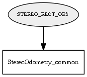

Global overview
All modules
All variables
All commands
Mission files
Pipelines
Variable: STEREO_RECT_OBS
Variable info:
Variable name
Short description
Who publishes it?
Who subscribes to it?
STEREO_RECT_OBS
Stereo images, after rectification, as mrpt::obs::CObservationStereoImages objects
StereoOdometry_common
Variable graph:

Detailed description:
Stereo images, after rectification, as mrpt::obs::CObservationStereoImages objects
Page generated by
Mooxygen 1.1.0
at Thu Jan 22 11:30:21 2015